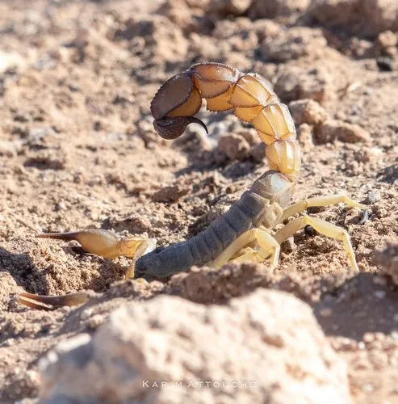

蛛形动物 · 动物界
黄肥尾蝎 Androctonus australis

北非和中东的剧毒蝎子，体色黄褐，尾部粗壮，毒性极强，被蜇后可能危及生命，是世界上最危险的蝎子之一。
- 分类
- 门节肢动物门纲蛛形纲目蝎目科钳蝎科属肥尾蝎属
- 栖息环境
- 干旱沙漠与半荒漠的沙地、石缝和废弃建筑中
- 地理分布
- 北非、中东和中亚的干旱地区
- 保护级别
- IUCN 暂无评估；非中国原产，在中国无保护级别
物种志
黄肥尾蝎体长 8–10 cm，体色黄褐至沙黄色，头胸甲和螯足较细，尾部粗壮，毒针发达；它的尾节比多数蝎子更粗，因此得名“肥尾蝎”。
它分布于北非、中东和中亚的干旱沙漠与半荒漠，栖息于沙地、石缝和废弃建筑中，夜间出来捕食昆虫、蜘蛛和小型蜥蜴。黄肥尾蝎毒性极强，毒液含强效神经毒素，被蜇后剧烈疼痛、出汗、呕吐，严重时可致呼吸衰竭，是世界上最危险的蝎子之一；在分布区活动时应穿封闭鞋袜、避免徒手翻石块。它行动迅速，受到威胁时会举起尾针，体色与沙地十分接近，当地医院常备抗蝎毒血清。目前 IUCN 暂无评估，非中国原产，在中国无保护级别。
形态与习性
- 食性昆虫、蜘蛛和小型蜥蜴
- 体长8–10 cm
- 识别体色沙黄，尾部明显粗壮
- 毒性极强，可致呼吸衰竭，需立即就医
- 习性夜行性，行动迅速，受威胁时举尾
- 分布北非、中东和中亚的干旱地区
趣味知识
- 黄肥尾蝎的尾巴又粗又壮，毒针里装着强效神经毒素。
- 它的体色和沙地几乎一样，白天很难被发现。
- 被黄肥尾蝎蜇伤属于急症，必须尽快送医注射抗毒血清。